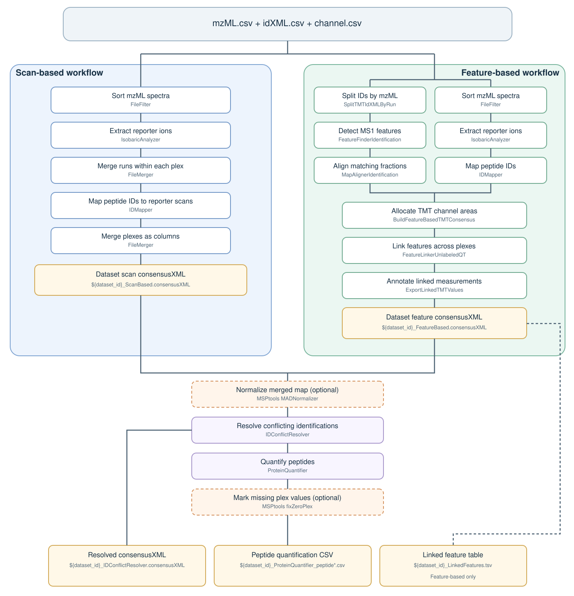

TMT quantitation
OpenMS IsobaricAnalyzer extracts TMT reporter signals and associates them with peptide identifications and channel descriptions. The default workflow measures reporter-ion intensities; an experimental alternative apportions MS1 feature areas to reporter channels.

Open the original flowchart at full size.

How it works
- Group acquisition fractions by TMT plex and map the channels from your channel CSV.
- Extract reporter ions with IsobaricAnalyzer, using the selected label set and isotope-correction options.
- For
scan_based, attach peptide identifications to reporter features and merge the plex maps. - For
feature_based, extract MS1 features with FFId, align corresponding fractions across plexes, and apportion each feature's area using its matched reporter-ion proportions. Link features and combine the fraction maps. - Apply the selected normalization, resolve competing identifications, and export the final consensusXML and peptide table for protein quantitation.
Inputs and outputs
The acquisition and identification manifests are supplied automatically. Provide the channel CSV through the shared channel_csv setting and choose plex_type to match the labels. The same reporter type is used throughout a run.
Both routes publish <dataset_id>_IDConflictResolver.consensusXML and <dataset_id>_ProteinQuantifier_peptide.csv. The feature-based route also writes <dataset_id>_LinkedFeatures.tsv, retaining the original fraction, plex, and channel identifiers. MAD normalization writes scaling information and a normalized feature map. Optional intermediate maps and per-run diagnostics are controlled by save_intermediate_files.
Normalization and workflow choices
Normalization is already enabled. SpectroMesa-DDA launches a template that selects mad, using MSPtools MADNormalizer on the merged dataset. This overrides the standalone pipeline's openms default. The alternative openms method uses IsobaricAnalyzer's median-ratio normalization and a channel labeled reference in each plex. MAD uses a physical reference by default; MADNormalizer.virtual_reference = true derives a reference from reporter intensities instead.
MAD writes reference-scaled quasi-intensities by default. Setting MADNormalizer.quasi_intensity = false writes normalized log2 ratios. Zero then represents equality to the reference, so the workflow skips its all-zero-plex missingness cleanup for that output mode. With quasi-intensity or OpenMS-normalized output, the cleanup distinguishes unobserved plexes from measured quantities.
Feature-based TMT requires a deliberate choice
tmt_workflow defaults to scan_based. The feature_based route is experimental and requires matching fraction IDs across plexes. If normalization is enabled, keep tmt_normalization_method = 'mad'; OpenMS normalization is incompatible with feature-based quantitation.
Bridge scaling is off by default. For feature-based MAD quasi-intensities, MADNormalizer.bridge_scale = true scales plexes using their median valid reference areas. With a physical reference, use a common reference sample across plexes. Virtual-reference bridge scaling additionally requires MADNormalizer.allow_virtual_bridge = true and assumes comparable overall composition.
Parameter reference
Use the quantitate_ProteomicTMT block inside params. Defaults below describe this step as launched by SpectroMesa-DDA. “Not set; tool default” means no override is passed. Automatically supplied values do not need to be repeated.
Analysis settings
| Parameter | Type | Default / supplied value | Meaning |
|---|---|---|---|
FeatureFinderIdentification |
Block | Not set; tool default | FeatureFinderIdentification options for the feature-based workflow. |
FeatureLinkerUnlabeledQT |
Block | Not set; tool default | FeatureLinkerUnlabeledQT options for the feature-based workflow. |
FileFilter |
Block | Not set; tool default | Optional FileFilter command options; sort is pipeline-managed. |
FileMerger |
Block | Not set; tool default | Optional FileMerger command options; append_method is pipeline-managed. |
IDConflictResolver |
Block | Not set; tool default | IDConflictResolver options. |
IDMapper |
Block | Not set; tool default | IDMapper options, including feature and consensus options. |
IsobaricAnalyzer |
Block | Not set; tool default | IsobaricAnalyzer options, including extraction and quantification. |
MADNormalizer |
Block | Not set; tool default | MSPtools MADNormalizer options; underscores become CLI hyphens. |
MapAlignerIdentification |
Block | Not set; tool default | MapAlignerIdentification options for the feature-based workflow. |
ProteinQuantifier |
Block | Not set; tool default | ProteinQuantifier options. |
consensusXML_csv |
Path | Not supplied | One premerged consensusXML file per TMT plex. |
consensusXML_entrypoint |
Boolean | false | Use consensusXML_csv instead of mzML_csv when true. |
enable_tmt_normalization |
Boolean | true | Normalize TMT quantities with the selected method. Already enabled. |
filter_na_consensus_handles |
Boolean | false | Remove NaN reporter handles after MAD normalization. False preserves missing channel positions. |
fixZeroPlex |
Block | Not set; tool default | MSPtools fixZeroPlex options; underscores become CLI hyphens. |
plex_type |
Text | tmt10plex | OpenMS reporter type shared by all plexes in an mzML run. |
remove_mapped_consensus |
Boolean | false | Retain a separate map of features without mapped identifications when intermediate output is enabled. |
save_intermediate_files |
Boolean | false | Publish additional intermediate files for inspection. Final outputs and execution logs are retained independently. |
tmt_normalization_method |
Text | mad | Normalization method, either mad or openms. |
tmt_workflow |
Text | scan_based | Select scan_based (reporter-ion peptide quantification) or feature_based (MS1 feature-based TMT quantification). |
Software and containers
| Parameter | Type | Default / supplied value | Meaning |
|---|---|---|---|
docker_image_msptools |
Text | ghcr.io/theboutroslab/msptools:1.1.1 | Container image for msptools. Change only to a compatible image. |
docker_image_openms |
Text | ghcr.io/theboutroslab/openms-thirdparty:3.6.0 | Container image for openms. Change only to a compatible image. |
docker_image_pyopenms |
Text | ghcr.io/theboutroslab/pyopenms:3.5.0 | Container image for pyopenms. Change only to a compatible image. |
msptools_version |
Text | 1.1.1 | Version used for output labeling and default container selection. |
openms_version |
Text | 3.6.0 | Version used for output labeling and default container selection. |
pyopenms_version |
Text | 3.5.0 | Version used for output labeling and default container selection. |
Automatically supplied settings
| Parameter | Type | Default / supplied value | Meaning |
|---|---|---|---|
channel_csv |
Path | Shared channel_csv | Reporter channels and sample descriptions keyed by plex_id for mzML input. |
dataset_id |
Text | Shared dataset_id | Analysis name used to organize and name outputs. |
idXML_csv |
Path | Generated validated-identification manifest | One matching idXML file per plex. |
mzML_csv |
Path | Generated plex/fraction manifest | mzML files for one or more TMT plexes. |
output_dir |
Path | Assigned within the analysis output | Destination for this step. Set the shared output_dir for the complete analysis. |
Tool settings
| Parameter | Type | Default / supplied value | Meaning |
|---|---|---|---|
FeatureLinkerUnlabeledQT.algorithm.distance_MZ.max_difference |
Number | 10.0 | Maximum m/z difference for linking, in the unit selected below. |
FeatureLinkerUnlabeledQT.algorithm.distance_MZ.unit |
Text | ppm | Mass-tolerance unit used for feature linking. |
FeatureLinkerUnlabeledQT.algorithm.distance_RT.max_difference |
Number | 100.0 | Maximum aligned retention-time difference for feature linking, in seconds. |
FeatureLinkerUnlabeledQT.algorithm.use_identifications |
Boolean | true | Use peptide identification agreement when linking features. |
IDMapper.consensus.annotate_ids_with_subelements |
Boolean | false | Record which constituent feature matched each identification. |
IDMapper.consensus.use_subelements |
Boolean | false | Match identifications against constituent feature coordinates. False maps against consensus coordinates. |
MADNormalizer.allow_virtual_bridge |
Boolean | false | Explicitly permit bridge scaling with virtual references, assuming comparable sample composition. |
MADNormalizer.bridge_scale |
Boolean | false | Align feature-based plexes by median positive reference area. Requires quasi-intensity output. |
MADNormalizer.quasi_intensity |
Boolean | true | Write reference-scaled quasi-intensities. False writes normalized log2 ratios. |
MADNormalizer.virtual_reference |
Boolean | false | Derive the reference from reporter intensities instead of a channel named reference. |
MADNormalizer.virtual_reference_min_channels |
Number | 1 | Minimum valid channels per feature and plex needed to form a virtual reference. |
ProteinQuantifier.best_charge |
Boolean | true | Select one charge per modified peptide in the TMT-stage peptide table. The later protein step has a separate best-charge setting. |
ProteinQuantifier.fractions.aggregate |
Text | sum | How the TMT-stage peptide quantifier combines design fractions; sum by default. |
Additional tool options
OpenMS tool blocks accept version-specific options. For example, IsobaricAnalyzer.extraction.purity_interpolation = false passes the corresponding valued option. True presence flags enable an option and false omits them; lists pass multiple values. Do not supply pipeline-managed input/output paths, thread counts, reporter type, or merge mode through these blocks.
For reporter isotope correction, put the label-set-specific settings under IsobaricAnalyzer.quantification; use the matrix appropriate to your reagent lot and reporter type. Consult IsobaricAnalyzer's OpenMS 3.6 help for the exact option names. MSPtools names use underscores in the configuration and hyphens on the command line, for example MADNormalizer.virtual_reference_min_channels.
The original program-parameter reference lists all supported tool blocks and their presence flags. Each configured tool's -helphelp (OpenMS) or --help (MSPtools) is the complete version-specific option reference.
Computing and temporary files
The shared parameter reference explains these settings. This pipeline declares: base_resource_update, max_cpus, max_memory, min_cpus, min_memory, resource_allocation_profile_tag, ucla_cds, work_dir.
The tables were checked against the individual pipeline configuration, its tool modules, and the SpectroMesa-DDA settings that select this workflow.
Related steps
Overview · Shared parameters · Configuring an analysis · Understanding results